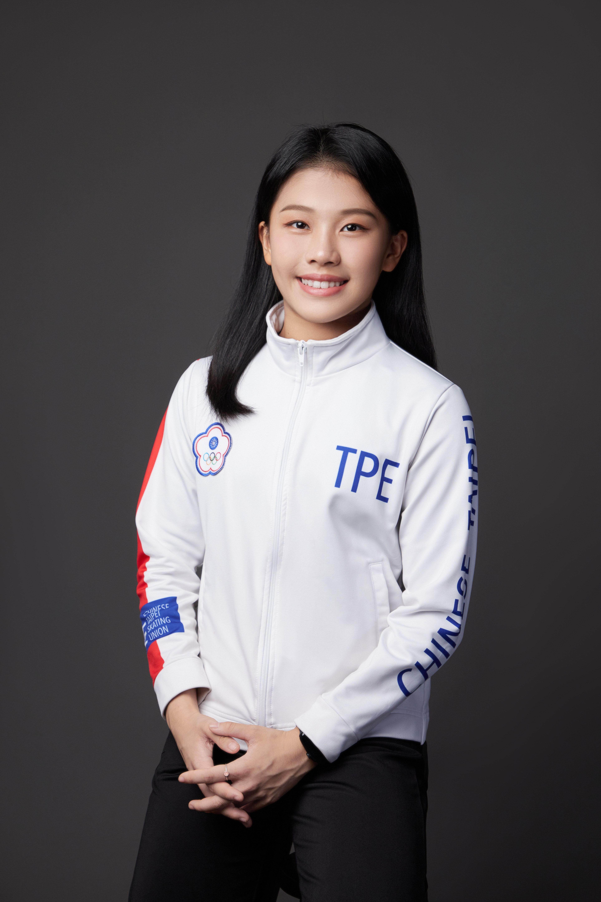
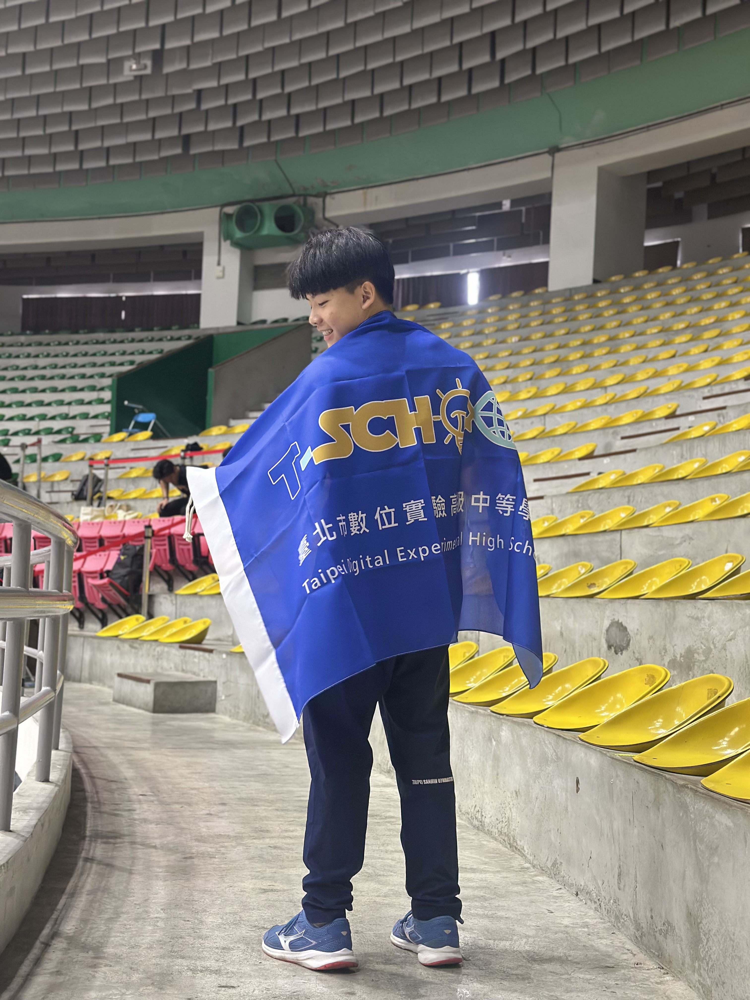

湯喆媗
113年全國花式滑冰錦標賽 青年女子組第二名
一開始會想要念數位實中是因為可以在很多區域學習以及獨特的個別需求課程吸引!
還有別於其他學校這所學校有者類似大學的選課機制!
數位實中給了我很多自我空間發展對音樂表演的鍾愛，並且同時也讓我接觸到其他有興趣領域的知識，例如作曲、心理學相關知識

曾翌瑋
113年全中運競技體操單槓金牌
想要讀實中是看到他跟其他學校有很不一樣的必修課，而且看起來是我想要學習的東西。還有一個原因是學校的時間跟課表比較彈性，很符合我需要大量訓練訓練時間的需求。而我進到實中以後，最大的收穫是學會了如何管理好自己的時間，畢竟我要花很多的時間在練習，學校也有不少功課、報告要做，所以管理好自己認真的時間還有休息的時間是我最大的收穫！

戴雅芝
得獎-金片子大賽最佳女演員
入圍-金鐘獎戲劇類最具潛力新人獎
因為嚮往可以自由安排自己的時間，希望能兼顧學業及各個興趣的發展，所以來就讀數位實中。